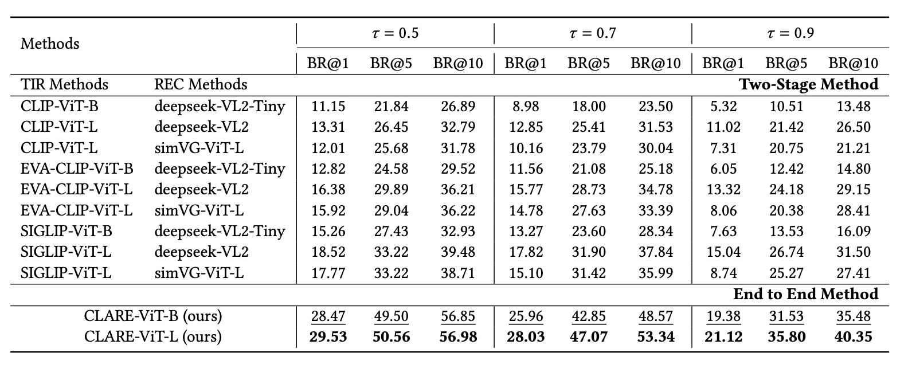

Dataset

Overview of the REIRCOCO dataset construction pipeline.
REIRCOCO is a large-scale benchmark specifically designed for instance-level retrieval and localization.
It features uniquely aligned referring expressions for over 215,000 object instances in 30,000+ images, totaling 613,000 fine-grained descriptions.
The dataset is constructed through a two-stage pipeline:
In the generation stage, GPT-4o is prompted with structured inputs—including bounding boxes, category labels, captions, and object context—to generate diverse and referentially unique expressions.
In the filtering stage, DeepSeek-VL verifies expression quality, retaining only unambiguous, grounded, and semantically accurate descriptions.
This ensures that each expression matches exactly one object instance, making REIRCOCO highly suitable for both retrieval and localization tasks.
Method
Overview of the proposed CLARE framework.
CLARE (Contrastive Language-Instance Alignment with Relation Experts) is a dual-stream architecture designed for instance-level retrieval and localization.
It processes vision and language in parallel while maintaining strong cross-modal alignment.
On the visual side, a SigLIP encoder and a Deformable-DETR-based object extractor generate dense, context-aware object features.
The language side uses a referring expression encoder enhanced by the Mix of Relation Experts (MORE) module, which injects semantic, spatial, and relational cues.
Cross-image instance-level alignment is supervised by the CLIA objective, which extends SigLIP’s contrastive loss for object-level understanding.
Focal Loss is further used to enhance discriminative instance selection within each image.
Together, these components enable high-precision retrieval and localization across large-scale galleries.
Results
